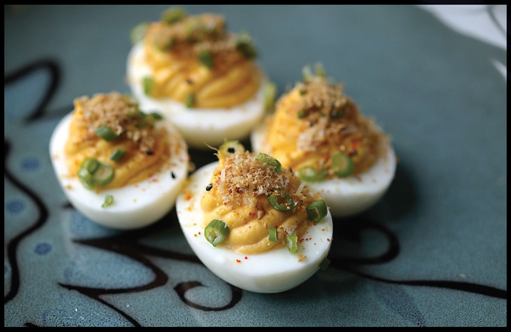

KATSUOBUSHI DEVILED EGGS
|
Yield Makes 8 deviled egg halves |
Active Time 20 minutes, plus time to boil the eggs if starting from raw Total Time 20 minutes, plus time to boil the eggs if starting from raw |
Karashi is powdered Japanese mustard. If you don’t have it, you can use dried Chinese or English hot mustard in its place or 2 teaspoons (10 ml) of hot prepared English or Dijon mustard.
INGREDIENTS
6 hard-boiled eggs, peeled (here)
2 teaspoons (10 ml) rice vinegar or distilled white vinegar
1 teaspoon (2 g) powdered karashi (see Note)
3 tablespoons (45 g) mayonnaise
1 teaspoon (3 g) Hondashi
Kosher salt
To Finish:
Thinly sliced scallions
Shichimi togarashi
Shaved katsuobushi
Coarse sea salt, such as Maldon or fleur de sel
I am a deviled egg fiend. They’ve been on the menu at Wursthall since before we even opened and have remained one of the most popular appetizers. The ones we serve there are an extra-mustardy affair with spicy German mustard in the filling and pickled mustard seeds spooned on top—you can find my recipe for free online if you search for “Wursthall Deviled Eggs,” or just stop by the restaurant and try them yourself. But this version, made with Japanese mustard and Hondashi, and topped with katsuobushi flakes, is another favorite of mine.
DIRECTIONS
1 Cut the eggs in half lengthwise. Place all the yolks in the bowl of a food processor. Select 8 of the best-looking egg white halves, rinse in cold water to clean out any excess yolk, and set aside; reserve the remaining 4 whites for another use. Add the vinegar, karashi, mayonnaise, and Hondashi to the food processor or mini chopper and process until smooth, scraping down sides of the bowl as necessary. Season with salt to taste.
2 Transfer the yolk mixture to a zipper-lock bag or a piping bag fitted with a piping tip. Filling and egg white halves can be stored in the refrigerator up to overnight before the eggs are filled and served.
3 To Finish: If using a zipper-lock bag to pipe, cut off a corner of the bag. Pipe a small dollop of filling onto a serving platter and place an egg white on top of it to secure it in place. Pipe the filling mixture into the egg white, overstuffing it. Repeat with the remaining egg white halves and filling. Top with scallions, togarashi, katsuobushi, and coarse salt and serve immediately.
